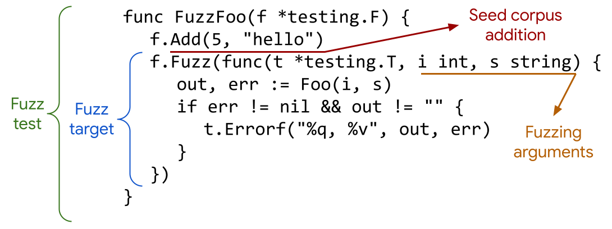

Fuzz Testing in Go: Discovering Vulnerabilities and Analyzing a Real Case (CVE-2022-43677)
Note
Author: Yu-Sheng Liu
Date: 2023/8/9
Overview
In this article, we begin by introducing the concept of fuzz testing and its significance in software testing. Subsequently, we present Go Fuzzing as an illustrative example to demonstrate how to implement fuzz testing in Go. Lastly, we showcase a practical case, CVE-2022-43677, to exemplify how we conduct fuzz testing on the free5GC system.
Fuzz Testing
What is Fuzz Testing (Fuzzing)?
Fuzz testing, commonly known as fuzzing, is an automated software testing technique used to uncover vulnerabilities, defects, and unexpected behavior in computer systems, applications, and networks.
The primary objective of fuzzing is to identify security flaws, crashes, or abnormal program behavior caused by invalid or unexpected inputs.
How Fuzz Testing Works
Fuzz testing involves subjecting the target software or system to a large number of inputs, including random or malformed data, to see how it handles them.
The idea is to explore edge cases and input combinations that may not have been adequately tested during traditional software testing.
Here's how the fuzzing process typically works:
-
Test Input Generation:
- Fuzzing tools generate test inputs based on various techniques, which can be broadly categorized as:
- Random Fuzzing: The simplest approach where random data is generated as input.
- Mutation-Based Fuzzing: Starting with valid inputs, the tool applies mutations to create variations of the original data.
- Grammar-Based Fuzzing: Using a predefined grammar or structure to generate valid and invalid inputs.
- Seed Corpus: Using existing inputs (e.g., files, network packets) as the starting set for mutation.
- Fuzzing tools generate test inputs based on various techniques, which can be broadly categorized as:
-
Test Execution:
- The generated inputs are provided as input to the target application, component, or system.
- The application is executed with each input, and its behavior is monitored during runtime.
-
Monitoring and Analysis:
- The fuzzer observes the application's behavior, including any crashes, exceptions, hangs, or memory-related issues.
- Code coverage analysis is often performed to determine which parts of the code were exercised during the testing.
-
Feedback and Iteration:
- Fuzzing tools use feedback mechanisms to prioritize and select inputs that lead to new code paths or unique behavior.
- The process is iterated with refined inputs to continue exploring deeper into the application.
Types of Fuzz Testing
-
Black Box Fuzzing:
- The tester has no access to the application's internal code or design.
- Random or mutated inputs are provided to the application to observe its behavior.
- Suitable for testing closed-source software or systems where the tester has limited knowledge.
-
White Box Fuzzing:
- The tester has access to the application's source code and can leverage this knowledge for targeted testing.
- Inputs can be intelligently crafted to explore specific code paths and functions.
- Provides more in-depth coverage but requires access to the application's code.
-
Grey Box Fuzzing:
- A combination of black box and white box approaches.
- The tester has partial knowledge of the application, such as certain APIs or protocols, but not complete access to the source code.
- Offers a balance between targeted testing and exploration of unknown behaviors.
Advantages of Fuzz Testing
-
Bug and Vulnerability Discovery:
- Fuzzing can uncover previously unknown security vulnerabilities and software defects, including memory corruption errors and input validation issues.
-
Automation and Efficiency:
- Fuzzing is an automated testing process, which allows it to scale and test large codebases quickly and efficiently.
-
Diverse Test Inputs:
- Fuzzing generates a wide range of test inputs, exploring various edge cases that might not be covered by manual testing.
-
Early Vulnerability Detection:
- Fuzzing can be integrated into the development process, enabling early detection and mitigation of vulnerabilities before deployment.
Conclusion for fuzz testing
Fuzz testing, or fuzzing, is a powerful and essential technique in the realm of software security testing.
By providing a diverse set of inputs and exploring uncharted code paths, fuzz testing uncovers vulnerabilities and defects that might otherwise remain hidden.
Next, we will use Go fuzzing as an example to introduce how to develop a fuzzing in Go.
Go Fuzzing
Go officially supports fuzzing starting from Go 1.18, and its official figure provides a brief and clear summary of the fuzzing function components.

Similar to Go's unit test functions, the fuzzing function in Go must follow the naming convention FuzzXxx and take an argument of type *testing.F. This argument has two main functions, Add and Fuzz.
-
AddFunction:- You can use the
Addfunction to add your own test data to the seed corpus for fuzz testing. The seed corpus is the initial set of inputs thatgo-fuzzwill use to start the fuzzing process.
- You can use the
-
FuzzFunction:- The
Fuzzfunction will be the target function that you want to test using fuzzing. It must have*testing.Tas its first argument, similar to regular unit tests. - Additionally, the
Fuzzfunction supports variadic arguments with the following basic data types:string,[]byteint,int8,int16,int32/rune,int64uint,uint8/byte,uint16,uint32,uint64float32,float64bool
- The
These data types represent the different kinds of input data that can be passed to the Fuzz function during the fuzzing process. The fuzzer will generate and mutate inputs of these types to explore different code paths and uncover bugs or unexpected behavior in the target function.
In summary, when writing fuzzing functions in Go, remember to use the FuzzXxx naming pattern, accept *testing.F as an argument, utilize the Add function to customize the seed corpus, and use the Fuzz function with supported basic data types to perform fuzz testing on your target functions.
You can use the command to execute the fuzz testing:
go test -fuzz=<regex> -fuzztime=<duration or times>
# Execute the fuzz testing until it crashs or finding some errors
go test -fuzz=Fuzz
# Execute the fuzz testing ten iterations
go test -fuzz=Fuzz -fuzztime=10x
# Execute the fuzz testing twenty seconds
go test -fuzz=Fuzz -fuzztime=20s
Simple Example - Division
We have developed a very simple function called Division that accepts two arguments, dividend and divisor, and then returns two results: quotient and remainder.
func Division(dividend, divisor int32) (
quotient, remainder int32,
) {
quotient = dividend / divisor
remainder = dividend % divisor
return
}
In the FuzzDivision function, we utilize the data generated by the Go fuzzer to test our Division function.
func FuzzDivision(f *testing.F) {
f.Fuzz(func(t *testing.T,
n1, n2 int32,
) {
q, r := Division(n1, n2)
require.Equal(t, n1, n2*q+r)
})
}
We expected to see:
n1 / n2 = q ... r
n1 = n2 * q + r
There should not be any problems with this implementation.
Then we can use the following command to start the fuzz testing.
go test -fuzz=^FuzzDivision$
The fuzz testing reports the error "integer divide by zero".
As a normal user, we understand that the divisor cannot be zero. However, the input data may not always be as expected. This is precisely why we use fuzz testing—to help us find edge cases and uncover unexpected behavior.
Go stores the data that caused the fuzz testing to fail. You can check them using the following command.
* Note: The file name, 29bf8459dc5d452f64d41eb8a253f6a672939b146b07fcced0b17e99729e9b91, may not be the same.
cat testdata/fuzz/FuzzDivision/29bf8459dc5d452f64d41eb8a253f6a672939b146b07fcced0b17e99729e9b91
The content of the file is as follows:
go test fuzz v1
int32(-7)
rune('\x00')
The first line indicates the encoding version, and the subsequent lines represent the argument values that triggered the error during the fuzz testing.
Now we can modify our Division function to check the divisor if it is zero.
var ErrorDivideByZero = fmt.Errorf("integer divide by zero")
func Division(dividend, divisor int32) (
quotient, remainder int32, err error,
) {
if divisor == 0 {
err = ErrorDivideByZero
return
}
quotient = dividend / divisor
remainder = dividend % divisor
return
}
Similarly, the FuzzDivision fuzzing function now checks for the presence of the ErrorDivideByZero error.
func FuzzDivision(f *testing.F) {
f.Add(int32(67), int32(3))
f.Fuzz(func(t *testing.T,
n1, n2 int32,
) {
if q, r, err := Division(n1, n2); err != ErrorDivideByZero {
require.Equal(t, n1, n2*q+r)
}
})
}
Now, we can use the following command to re-test the failing case.
go test -run=FuzzDivision/29bf8459dc5d452f64d41eb8a253f6a672939b146b07fcced0b17e99729e9b91
Conclusion for Go Fuzzing
We have used a simple example to describe how to develop a fuzzing function in Go and how to leverage the Go command-line tool to execute fuzz testing.
Next, we will examine a real case, CVE-2022-43677, and demonstrate the process of developing a fuzzing function to identify edge cases.
CVE-2022-43677
Accroding to the descriptoin:
In free5GC 3.2.1, a malformed NGAP message can crash the AMF and NGAP decoders via an index-out-of-range panic in aper.GetBitString.
In response to this vulnerability, we have developed a fuzzing function to test the NGAP decoder.
The function utilizes two approaches: modifying the NGAP message's content under a valid template or adjusting its format by changing the Information Elements (IEs) with variable lengths.
// Put the code under the free5gc/test
func FuzzNgapDecode(f *testing.F) {
f.Fuzz(func(t *testing.T,
modifyWhat uint8,
changeIe0, changeIe1, changeIe2, changeIe3, changeIe4 bool,
valueIe0A uint32,
valueIe2ACellId uint64, valueIe2ATac uint32,
valueIe3A uint64,
valueIe4A uint64,
valueIePlmn uint32,
) {
var idx, n int
var sendMsg []byte
var registrationRequest []byte
var bs []byte
var err error
var ngapPdu ngapType.NGAPPDU
var mobileIdentity5GS nasType.MobileIdentity5GS
var ue *test.RanUeContext
// New UE
ue = test.NewRanUeContext("imsi-2089300007487", 1, security.AlgCiphering128NEA0, security.AlgIntegrity128NIA2,
models.AccessType__3_GPP_ACCESS)
ue.AmfUeNgapId = 1
ue.AuthenticationSubs = test.GetAuthSubscription(TestGenAuthData.MilenageTestSet19.K,
TestGenAuthData.MilenageTestSet19.OPC,
TestGenAuthData.MilenageTestSet19.OP)
mobileIdentity5GS = nasType.MobileIdentity5GS{
Len: 12, // suci
Buffer: []uint8{0x01, 0x02, 0xf8, 0x39, 0xf0, 0xff, 0x00, 0x00, 0x00, 0x00, 0x47, 0x78},
}
if modifyWhat%2 == DoModifyContent {
if changeIe0 {
// RAN UE NGAP ID
ue.RanUeNgapId = int64(valueIe0A)
}
registrationRequest = nasTestpacket.GetRegistrationRequest(
nasMessage.RegistrationType5GSInitialRegistration, mobileIdentity5GS, nil, ue.GetUESecurityCapability(), nil, nil, nil)
ngapPdu = ngapTestpacket.BuildInitialUEMessage(ue.RanUeNgapId, registrationRequest, "")
if changeIe2 {
// User Location Information
for _, ie := range ngapPdu.InitiatingMessage.Value.InitialUEMessage.ProtocolIEs.List {
if ie.Id.Value == ngapType.ProtocolIEIDUserLocationInformation {
bs = make([]byte, 4)
valueIePlmn &= uint32(PlmnMask)
binary.LittleEndian.PutUint32(bs, valueIePlmn)
NgRan := ie.Value.UserLocationInformation.UserLocationInformationNR
NgRan.NRCGI.PLMNIdentity.Value = bs[:PlmnByteLen]
NgRan.TAI.PLMNIdentity.Value = bs[:PlmnByteLen]
bs = make([]byte, 8)
valueIe2ACellId &= uint64(CellIdMask)
binary.LittleEndian.PutUint64(bs, valueIe2ACellId)
NgRan.NRCGI.NRCellIdentity.Value.Bytes = bs[:CellIdByteLen]
bs = make([]byte, 4)
valueIe2ATac &= uint32(TacMask)
binary.LittleEndian.PutUint32(bs, valueIe2ATac)
NgRan.TAI.TAC.Value = bs[:TacByteLen]
}
}
}
if changeIe3 {
// RRC Establishment Cause
for _, ie := range ngapPdu.InitiatingMessage.Value.InitialUEMessage.ProtocolIEs.List {
if ie.Id.Value == ngapType.ProtocolIEIDRRCEstablishmentCause {
ie.Value.RRCEstablishmentCause.Value = aper.Enumerated(valueIe3A)
}
}
}
if changeIe4 {
// UE Context Request
for _, ie := range ngapPdu.InitiatingMessage.Value.InitialUEMessage.ProtocolIEs.List {
if ie.Id.Value == ngapType.ProtocolIEIDUEContextRequest {
ie.Value.UEContextRequest.Value = aper.Enumerated(valueIe4A)
}
}
}
sendMsg, err = ngap.Encoder(ngapPdu)
} else if modifyWhat%2 == DoModifyFormat {
registrationRequest = nasTestpacket.GetRegistrationRequest(
nasMessage.RegistrationType5GSInitialRegistration, mobileIdentity5GS, nil, ue.GetUESecurityCapability(), nil, nil, nil)
if changeIe1 {
registrationRequest[3] += 1
registrationRequest = append(registrationRequest, registrationRequest[len(registrationRequest)-1])
} else {
registrationRequest[3] -= 1
registrationRequest = registrationRequest[:len(registrationRequest)-1]
}
ngapPdu = ngapTestpacket.BuildInitialUEMessage(ue.RanUeNgapId, registrationRequest, "")
sendMsg, err = ngap.Encoder(ngapPdu)
require.Nil(t, err, "Error: %v", err)
require.Equal(t, int(sendMsg[3]), len(sendMsg[4:]), "%v", sendMsg)
idx = bytes.Index(sendMsg, []byte("\x00\x70\x40"))
assert.NotEqual(t, idx, -1, "Can not find UE context Request")
if idx != -1 {
if valueIe4A%8 == 0 || valueIe4A%8 == 1 {
n = 2
} else {
n = int(valueIe4A % 8)
}
sendMsg[idx+3] = uint8(n)
sendMsg = sendMsg[:idx+4]
bs = make([]byte, 8)
binary.LittleEndian.PutUint64(bs, valueIe4A)
for i := 0; i < n; i++ {
sendMsg = append(sendMsg, bs[i])
}
sendMsg[3] += uint8(n - 1) // total length
}
}
require.Equal(t, int(sendMsg[3]), len(sendMsg[4:]), "%v", sendMsg)
_, err = ngap.Decoder(sendMsg)
})
}
We can use the following command to execute the fuzz testing.
go test -fuzz=^FuzzNgapDecode$ -run=^FuzzNgapDecode$
The test resulted in a crash, which confirms the presence of the vulnerability as described in CVE-2022-43677.
The bug was found in the package aper at version v1.0.4. Fortunately, the latest version of the package has already fixed this issue. To verify the fix, we can update the aper package to the latest commit using the following commands:
# Update package aper to the latest commit
go get github.com/free5gc/aper@main
After updating the aper package, we can test it again with the fuzzing function:
go test -fuzz=^FuzzNgapDecode$ -run=^FuzzNgapDecode$
# Alternatively, re-testing the failing case
go test -run=FuzzNgapDecode/87af855bbc381c8d510af5ce897fcdd7f9154574e61c0413223f7e31769c2767
Conclusion
Fuzz testing is a powerful technique for improving the security and reliability of software systems. By subjecting programs to a wide range of inputs, fuzzing can uncover vulnerabilities and defects that might not be found through traditional testing methods. It automates the testing process, making it efficient and scalable for large codebases.
In the context of Go programming, Go fuzzing is well-supported and integrates seamlessly with the standard testing framework. Developers can create fuzzing functions to target specific functions and uncover potential issues using random or mutated inputs.
To demonstrate the effectiveness of fuzz testing, we presented a real case, CVE-2022-43677, which affected free5GC version 3.2.1. By developing a fuzzing function for the NGAP decoder, we were able to identify a vulnerability that caused a crash.
In conclusion, fuzz testing is a critical practice in software development, enabling developers to proactively discover and resolve bugs and vulnerabilities. It empowers them to deliver more secure and robust software systems, providing users with a higher level of confidence in the applications they use. By incorporating fuzz testing as part of the software development lifecycle, developers can significantly enhance the quality and security of their software products.
Reference
About
I'm Yu-Sheng Liu, a master's student at National Yang Ming Chiao Tung University. My research topic focuses on improving the performance of the 5G core network, such as reducing the latency of message propagation in SBI.
If you have any questions, please don't hesitate to contact me!